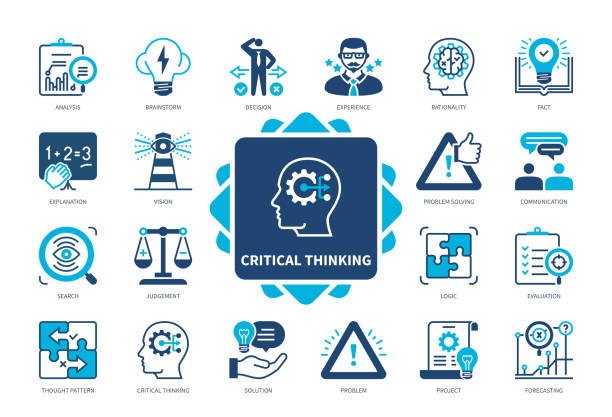

Pensamiento critico
El pensamiento crítico implica analizar y evaluar información de manera objetiva. Es fundamental para resolver problemas complejos y tomar decisiones informadas en el ámbito de la innovación tecnológica.
Adatabilidad
La adaptabilidad es la capacidad de ajustarse a los cambios y nuevas circunstancias. Los profesionales que se adaptan rápidamente son capaces de responder a las demandas de un entorno laboral en constante evolución.
Aprendizaje continuo
El aprendizaje continuo es la disposición de adquirir nuevos conocimientos y habilidades de forma constante. En un mundo tecnológico en evolución, los profesionales innovadores necesitan estar al tanto de las últimas tendencias y desarrollos.

Creatividad
La creatividad es la capacidad de generar ideas nuevas y valiosas, y de encontrar soluciones originales a problemas. Es clave en el proceso de innovación, ya que permite desarrollar productos y servicios únicos que se destacan en el mercado.
Trabajo en equipo
El trabajo en equipo permite a los profesionales colaborar y combinar sus conocimientos para alcanzar objetivos comunes. Es crucial en proyectos de innovación, donde la suma de ideas y habilidades genera mejores resultados.

| Horario | |||||
|---|---|---|---|---|---|
| Hora | Lunes | Martes | Miercoles | Jueves | Viernes |
| 8:10am | IDAI | IDAI | IDAI | IDAI | IDAI |
| 9:00am | Probabilidad | Probabilidad | Probabilidad | Probabilidad | Probabilidad |
| 9:50am | Calculo | Calculo | Calculo | Calculo | Calculo |
| 10:50am | Inglés | Inglés | Inglés | Inglés | Inglés |
| 11:40am | Economía | Economía | Economía | Economía | Economía |
| Ciclo escolar Sep-Dic 2004 | |||||